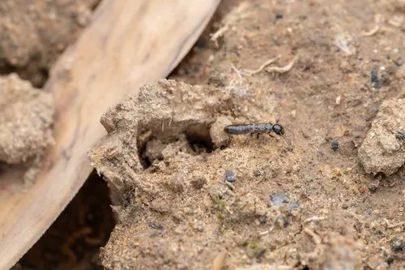

昆虫 · 动物界
黑胸散白蚁 Reticulitermes chinensis

群体分散、没有巨大主巢的白蚁，工蚁乳白、兵蚁前额有额腺，蛀食木材与房屋构件，是中国中部的常见害虫。
- 分类
- 门节肢动物门纲昆虫纲目等翅目科鼻白蚁科属散白蚁属
- 栖息环境
- 房屋木构件、地板、门框、树木枯桩和潮湿土壤中
- 地理分布
- 中国华北南部、华东和华中地区
- 保护级别
- 尚无保护级别；为房屋与古建筑的重要害虫
物种志
黑胸散白蚁的工蚁体长约四至五毫米，体呈乳白色，头部圆形，触角念珠状，腰部粗细均匀，没有明显的细腰；兵蚁体色较深，头部呈长方形，前额中央有一个小孔，能分泌乳白色的黏性液体，遇到天敌时用来涂抹对方。有翅繁殖蚁体黑褐色，翅膀长于身体，分飞后脱落。
它分布于中国华北南部、华东和华中，栖息在房屋木构件、地板、门框、树木枯桩和潮湿的土壤中，与家白蚁不同，散白蚁没有集中的大巢，群体分散在多个取食点之间，靠蚁道相连，因此更难一次根除。它蛀食木材内部，表面往往看不出痕迹，直到木构件被掏空才被发现，是南方和中部地区房屋、古建筑和园林树木的重要害虫。它一年发生一代，春夏之交分飞。它没有保护级别，防治以蚁情探测、土壤处理和饵剂诱杀为主。
形态与习性
- 工蚁体长约四至五毫米，乳白色，无细腰
- 兵蚁头部长方形，前额有分泌黏液的额腺
- 群体无集中大巢，分散于多个取食点
- 为害蛀食木构件内部，表面常看不出痕迹
- 分飞春夏之交分飞，繁殖蚁黑褐色
- 防治蚁情探测、土壤处理、饵剂诱杀
趣味知识
- 它没有集中的大巢，蚁群分散在几处取食点，所以一次很难清完。
- 兵蚁额头的腺体能喷出白色黏液，把来犯的蚂蚁粘住。
- 木头表面看着完好，里面可能已被蛀成一层薄壳。